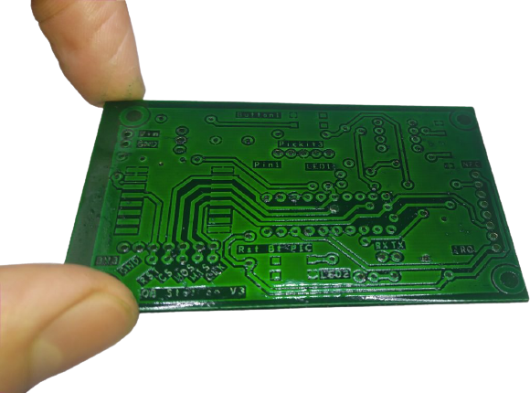
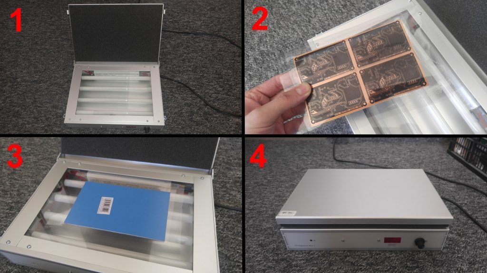
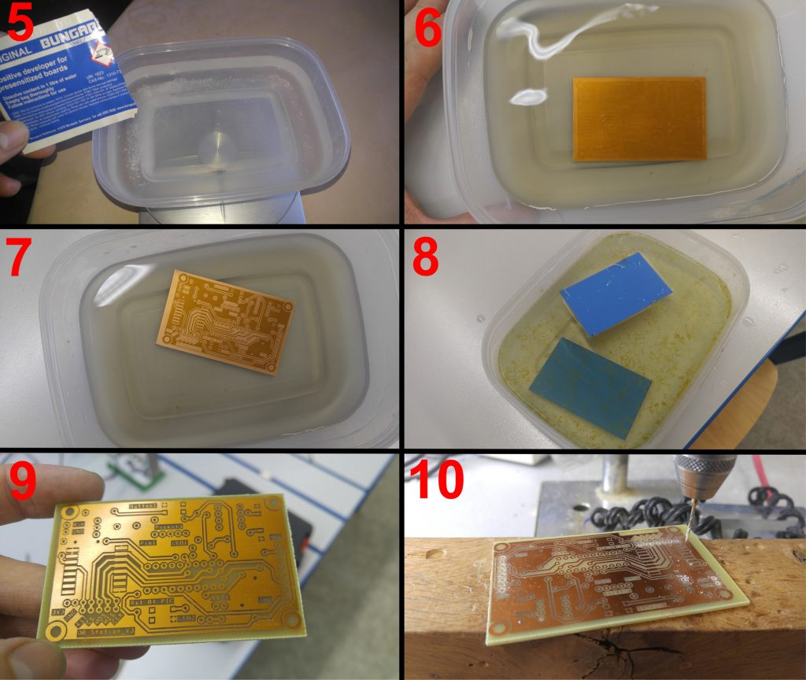
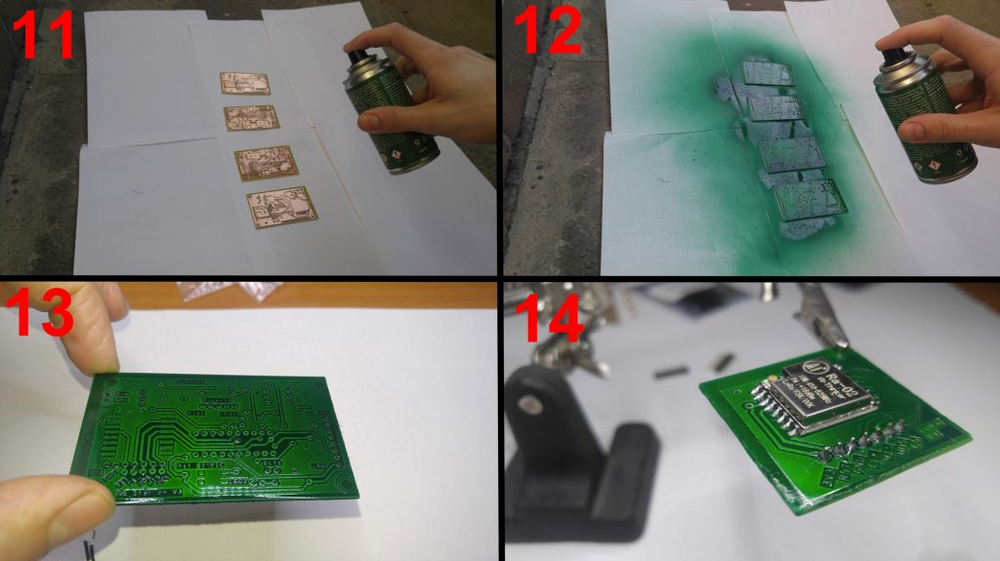

Chcete si vyrobiť dosku plošných spojov, tzv. DPS? Počítam s tým, že samotný motív si každý vytvorí sám v programe, ktorý mu vyhovuje. Môže to byť Eagle, Cadance Orcad, Altium Designer, Kicad, prípadne ďalšie. Akonáhle máme motív, pripravíme si ho do PDF v správnej mierke a zrkadlovo a môžeme začať s výrobou. Výrobný proces nie je nijako zložitý, ale vyžaduje trpezlivosť a precíznosť. Dôležité je poznamenať, že proces je vhodný hlavne pre jednostranné DPS. Obojstrannú DPS je možné vyrobiť tiež, ale je to prácnejšie a s neistým výsledkom. Diery v obojstrannom DPS nebudú prokované, takže je potom nutné spájkovať súčiastky z oboch strán a nie je možné počítať s prokovami, jedine ich vyrobiť z drôtu. Existujú samozrejme metódy aj pre obojstranné DPS s prokovami, tie sú už ale zložitejšie.
Prenos motívu na DPS

Motív spoja vytlačíme na priehľadnú fóliu. Buď kúpime fóliu a použijeme laserovú tlačiareň, alebo nájdeme copy centrum, kde takúto tlač ponúkajú. Motív tlačíme zrkadlovo, aby sme ho mohli k doske priložiť potlačenou stranou. Hrúbka fólie medzi motívom a povrchom fotosenzitívnej vrstvy by mohla rozmazať motív na DPS. Aj keď nastavíme kvalitu tlače na 600 dpi alebo viac, nemusí byť motív úplne nepriehľadný. Ak chcete mať istotu, navrstvíte cez seba dva rovnaké motívy. Pripravený motív na fólií priložíme k DPS, ktorú predtým zbavíme modrej ochrannej vrstvy. V tento moment postupujeme rýchlo. Do otvoreného prístroja na UV osvit položíme DPS s pritlačeným motívom. Zatvoríme veko, čím pritlačíme motív k DPS. Časovač na prístroji Proma nastavíme na dve a pol minúty. Iný typ UV prístroja môže vyžadovať inú dobu osvitu. Keď ubehne nastavený čas, UV lampy zhasnú a v komore zostane úplná tma. Nehrozí teda presvietenie v prípade, že nevyberiete DPS hneď. Po otvorení komory je však potrebné konať rýchlo, aby sme neosvetlili aj miesta, ktoré nechceme. Denné svetlo obsahuje aj UV spektrum.
Vyvolanie a leptanie DPS

Osvietenú dosku teraz vyvoláme vo vývojke. Conrad ponúka vývojku v prášku. Existuje pozitívna a negatívna, vyberte tú správnu podľa toho, čo výrobca uvádza pri danej DPS (v mojom prípade je pozitívna). Balenie 10 g rozmiešame v 1 litri vody. Do pripravenej vývojky dáme DPS na pár minút vyvolať. Pre urýchlenie môžeme miskou pohybovať zo strany na stranu. Dosku necháme vyvolávať motívom nahor, vďaka tomu spoznáme, až bude vyvolanie hotové (viď. tretí obrázok). Ďalším krokom je leptanie. K tomu použijeme síran sodný. Conrad ho dodáva v prášku, ktorý rozmiešame v teplej vode. Ideálna teplota je 40 °C, maximálne však 50 °C. V 1 litri vody rozpustíme 250 g prášku. DPS vložíme až v momente, keď je celý prášok rozpustený. Ideálne je nechať dosku plávať na hladine motívom nadol. Leptanie je v tomto prípade najrýchlejšie, ale nevadí, ak sa doska potopí. Meď, ktorá je odhalená sa sfarbí do ružova. Akonáhle na doske zostane len zlatý motív, leptanie ukončíme. Z medi je nutné odstrániť ochrannú vrstvu. Než to však urobíme, vyvŕtame všetky diery. Meď vďaka tomu pri vŕtaní nezoxiduje.
Ochranný zelený spájkovací lak

Vyvŕtaný plošný spoj vyčistíme a odstránime ochrannú vrstvu z medi. K tomu použijeme liehový čistič, silný alkohol alebo odlakovač na nechty. Akonáhle je meď odhalená, je dobré čo najrýchlejšie aplikovať nejakú ochrannú vrstvu. Bežné DPS sú pokryté zelenou nespájkovacou maskou. Tá ale nesmie prekrývať spájkovacie plôšky. K tomu sa používa ďalšia vrstva materiálu a ďalší motív, ktorý sa v maske vytvorí podobne ako v medi. Tento postup sa dá doma vykonať tiež, ale je to veľmi pracné. Navyše aj malá nepresnosť potom sťažuje spájkovanie. Namiesto toho odporúčam spájkovací lak. Ten sa nanesie na celú plochu DPS, chráni meď a zároveň uľahčuje spájkovanie. Je možné použiť rozpustenú kolofóniu v liehu a štetec, ale Conrad ponúka zelený lak v spreji od spoločnosti Bungard. Ten na DPS jednoducho nastriekame, necháme zaschnúť a je hotovo. Spájkovať je možné jednoducho priamo na lak a DPS vyzerá profesionálne. Lak pri izbovej teplote úplne zaschne za jeden až dva dni. Avšak spájkovanie je lepšie vykonávať po pár hodinách od aplikácie, kedy lak najviac podporuje spájkovanie. Výrobca tvrdí, že stačí čakať 5 minút, ale to je povrch ešte veľmi vlhký. Akákoľvek manipulácia tak môže poškodiť vrstvu laku.
Záver
Možnosť vyrobiť si prototyp plošného spoja, kedykoľvek je potreba, je neoceniteľná. Je však nutné počítať s limitmi takejto výroby DPS. A to už pri samotnom návrhu motívu! Hrubé spoje, veľké spájkovacie plôšky, primerané diery, vhodné súčiastky s dostatočným rozostupom pinov atď. Na povrchu potom nečakajte potlač, všetky popisky je tak dobré vpísať priamo do medi. Čo sa týka finančnej náročnosti, do kariet hrá lacná cena polotovaru DPS a opätovná použiteľnosť všetkých chemikálií. Ak si necháme spoj vyrobiť, dostaneme samozrejme kvalitnejší výsledok, bude ale výrazne drahší a počkáme si na neho napríklad týždeň. Rýchlosť výroby jednoduchého DPS je veľkým plusom tejto metódy. Neváhajte, vyberte si v rozsiahlej ponuke Conrada potrebné vybavenie a pusťte sa do výroby!